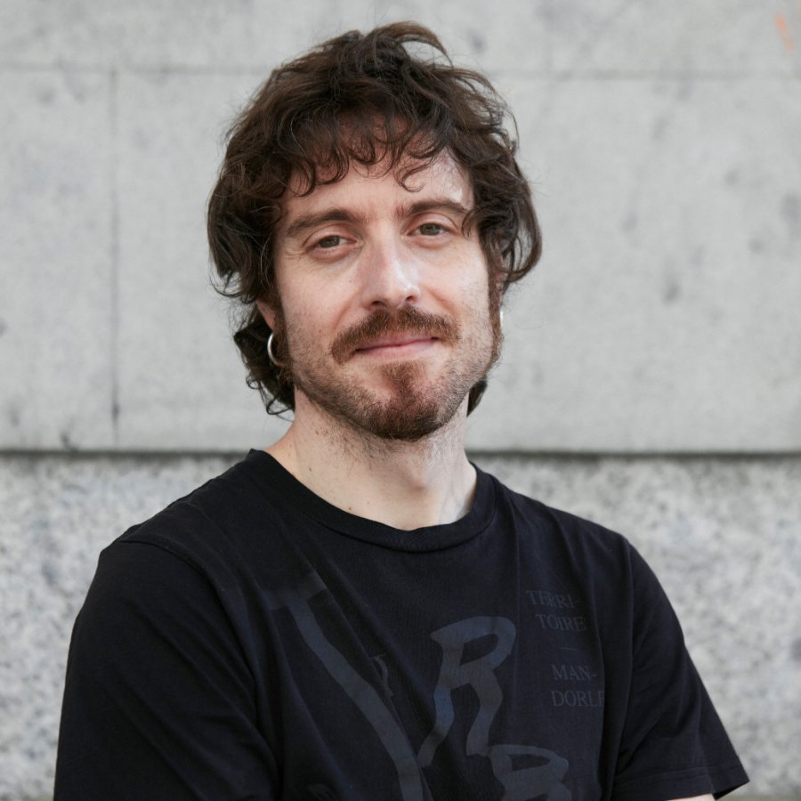
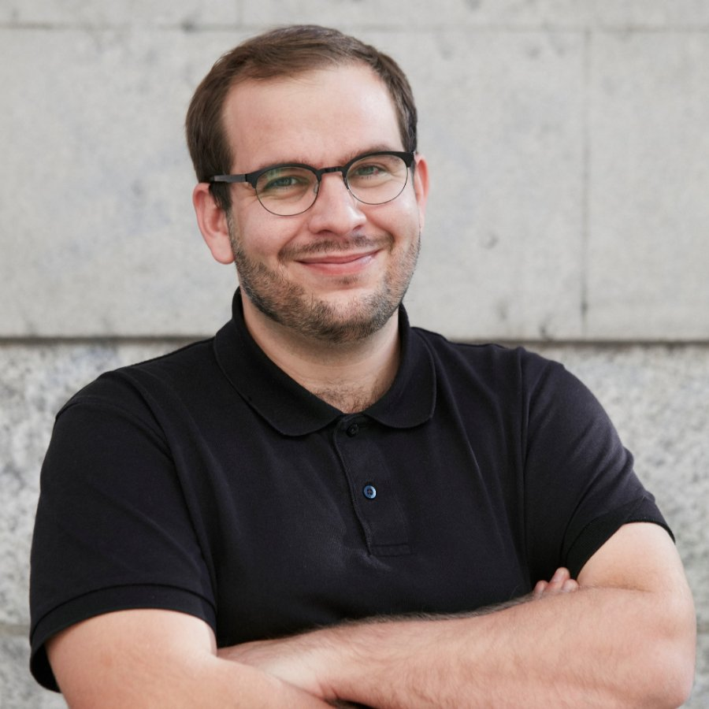
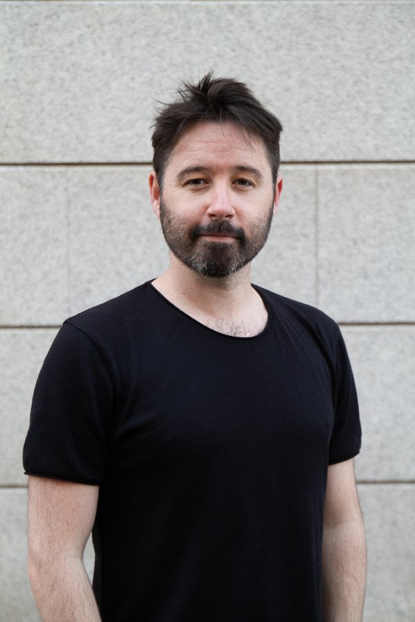

Maiki Calvo IMDb
Maiki Calvo, con más de quince años de experiencia en el sector, ha
supervisado películas como Tiempo después, All Dirt Roads Taste of Salt
(nominada en el Festival de Sundance) o Costa da morte (galardonada en el Festival
Internacional de Locarno) así como la reciente serie Poquita fe. Alterna su carrera
de supervisor con la de editor de efectos para otros estudios, donde destaca su trabajo en
El desconocido (Goya al mejor sonido en 2015), Justin and the knights of
valour y series como La Linea invisible o Cuatro estaciones en La
Habana.

Jorge Alarcón IMDb
Jorge Alarcón, editor de diálogos en series destacadas como Élite,
Apagón y Senna. También ha trabajado en películas galardonadas como La
sociedad de la nieve, 20.000 especies de abejas y La infiltrada.
Actualmente colabora con Joakim Sundström supervisando los diálogos de proyectos entre los que
destacan This England, All of Us Strangers y Greed. Cabe mencionar
también su participación como supervisor de sonido en Las abogadas y La mala
familia, así como su labor como jefe de sonido en El año del descubrimiento.

Brendan golden IMDb
Brendan Golden ha trabajado como diseñador sonoro y editor de efectos en
películas como La sociedad de la nieve (por la que ganó un MPSE Golden Reel Award),
Cerrar los ojos, Apocalipsis Z o Bird Box Barcelona, y en series
como La Ruta, Apagón, Senna, Marbella o Machos
Alfa. También ha trabajado como supervisor de sonido en películas como Mamántula
y El color del cielo, ambas seleccionadas en el festival de San Sebastián. A nivel
internacional destaca su trabajo en películas de Bollywood como A Gentleman o la
aclamada serie india The Family Man.